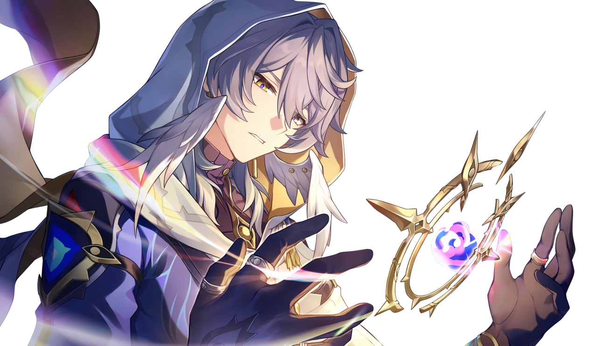

kat, infj. any / all prns

about my account
• sunday centric account
• primarily focus on hsr (sunday) but also rarely genshin or other hsr characters (e.g. robin)
• i am NOT a sunday yume! please do not see me as such. i do not ship myself with him i just really really love him as a character and am attached to him.
ABOUT SHIPS (IMPORTANT)
• i do not ship sunday with anyone. i see sunday as a solo character. i also headcanon him as aroace.
• because of this, when i rt art with a ship name in the hastags, please do not misunderstand. i rt it in a platonic sense / because the art is pretty not because i ship the characters involved.
• similarly to this, the people i follow do not reflect my own personal tastes. just because i follow someone who focuses on a ship does not mean i ship it or even like it. i just think theyre nice / cool and like sunday so i gave them a follow.
dni
i have no specific dni! honestly i am more the muting people type. but if i did block you at some point you can ask to be unblocked in dms i might consider it (sometimes i block out of very petty reasons)